kim + paul at the green building
Kim and Paul's quirky springtime wedding was held on a rainy May afternoon at The Green Building, a former brass foundry in Brooklyn's sweet little neighborhood of Carroll Gardens. Photographers by profession, this couple's ceremony and reception was full of photographic references, from the seamless paper backdrop for their vows to the display of vintage film cameras at the reception. Kim and Paul made sure to include lots of awesome touches, like dinner served by food truck, 80s-style plastic heart sunglasses, and confetti...lots of it! As my first time assisting and shooting at a wedding, ever, this one was a great way to start. Happy thoughts to you, Kim and Paul!
[Images shot while assisting Levi Stolove. Thanks, Levi!]
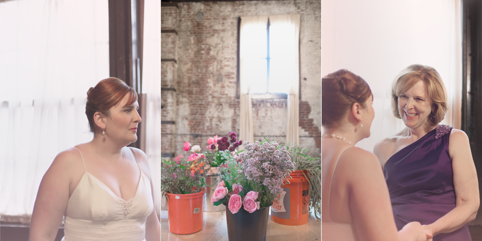
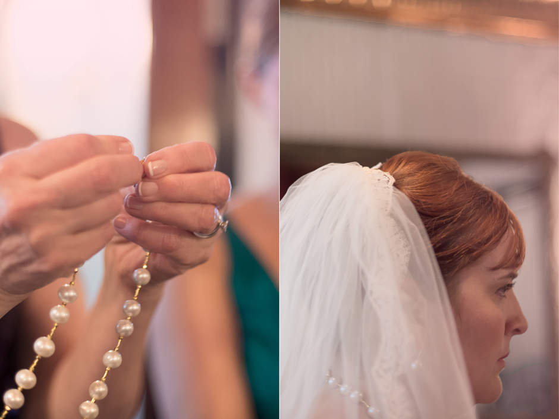
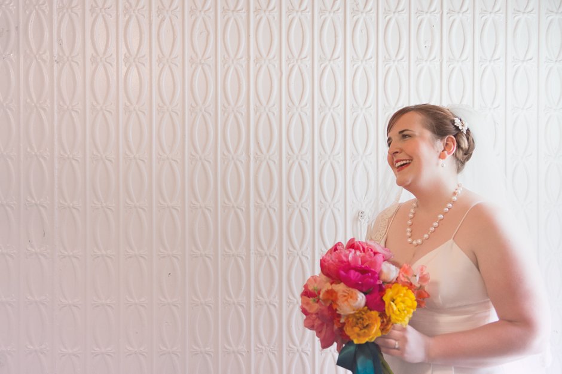
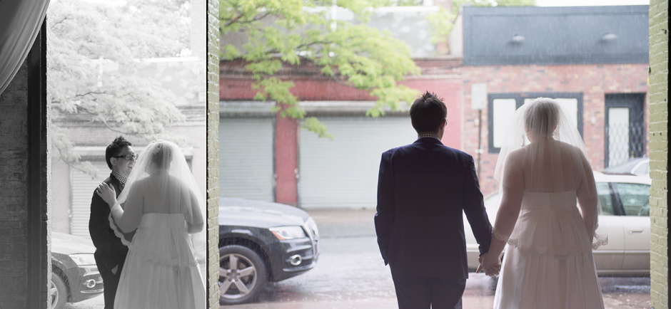
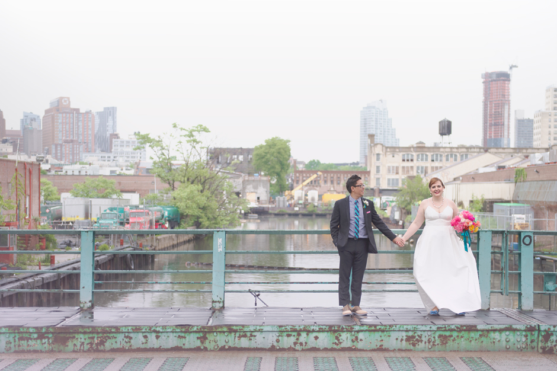
 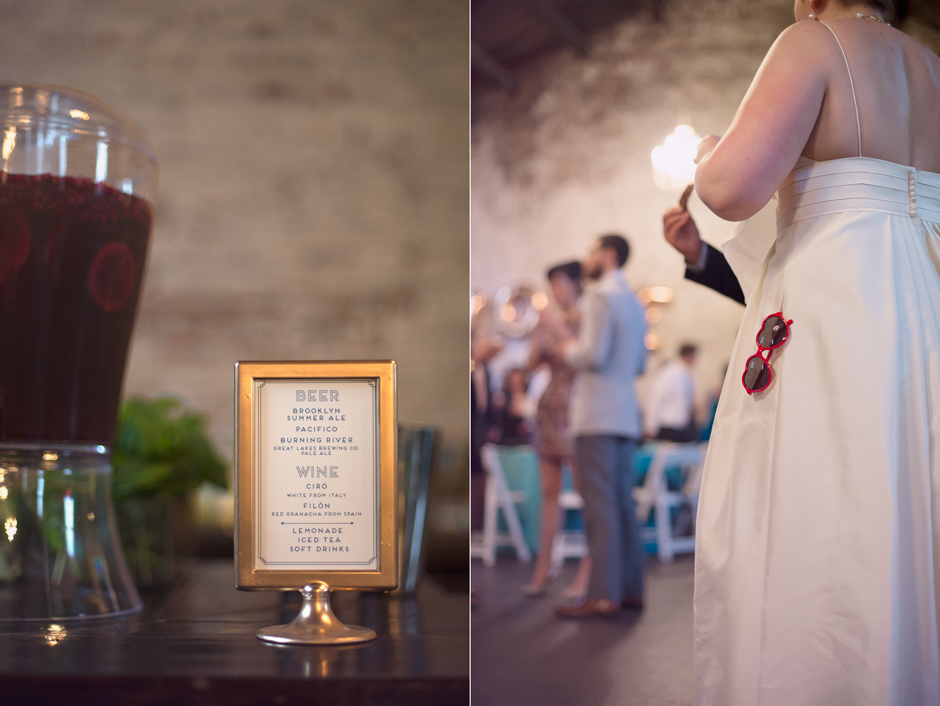
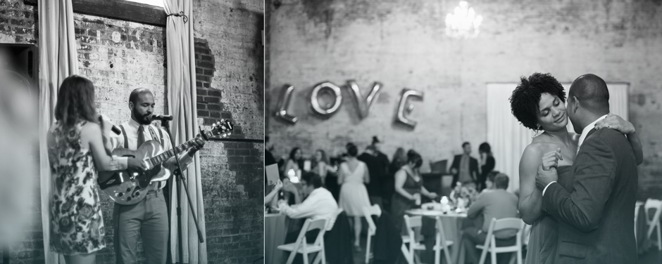
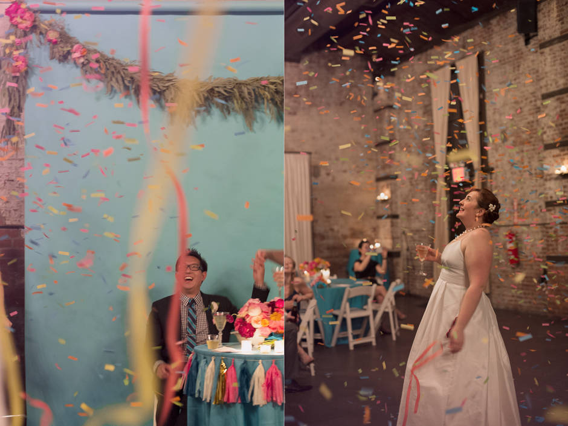
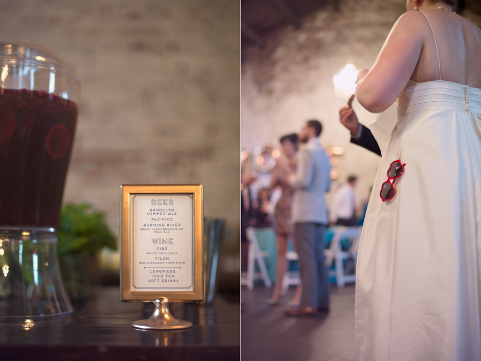
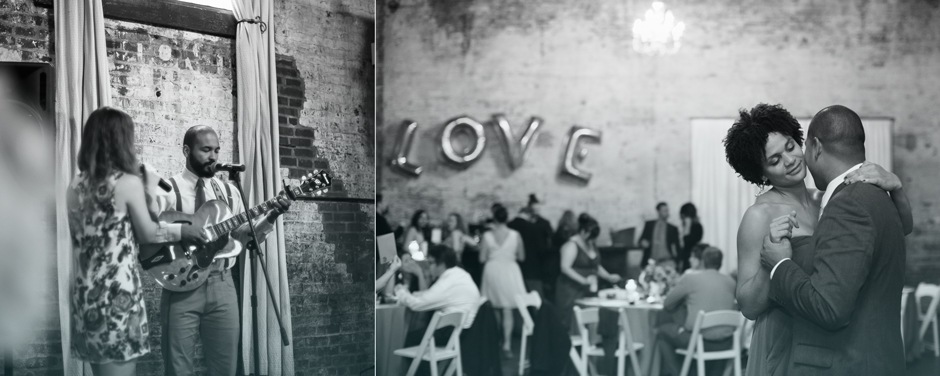
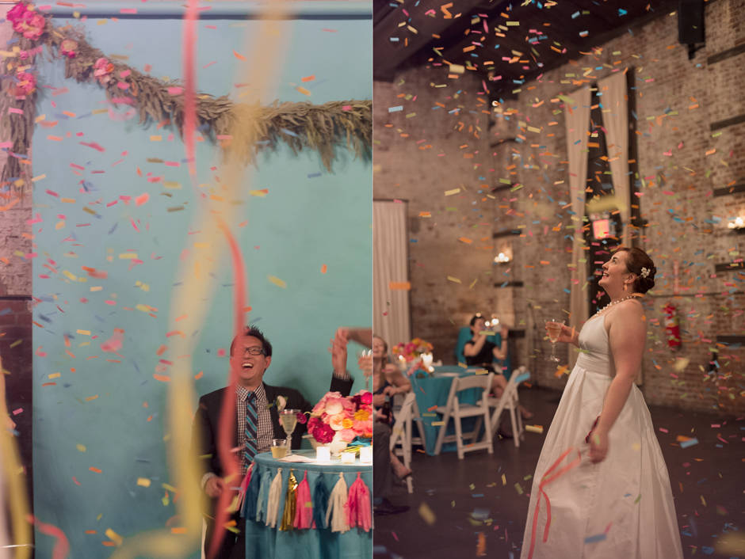
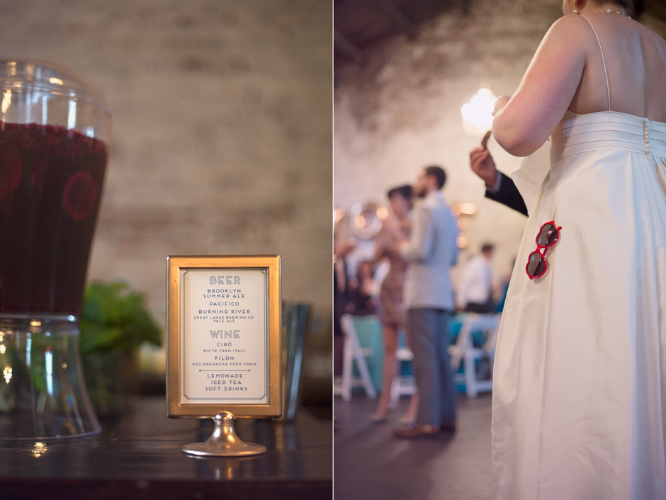
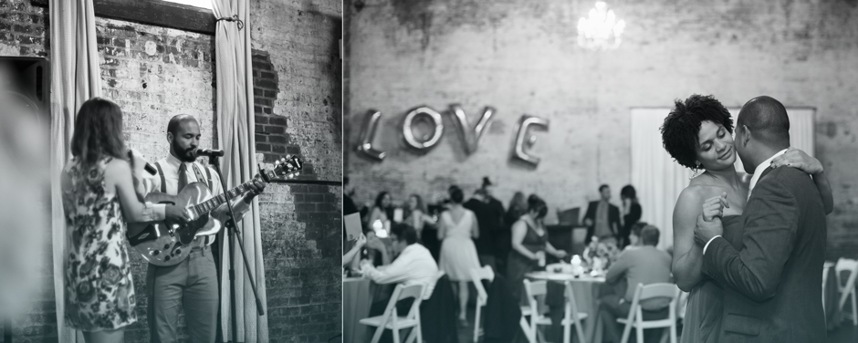
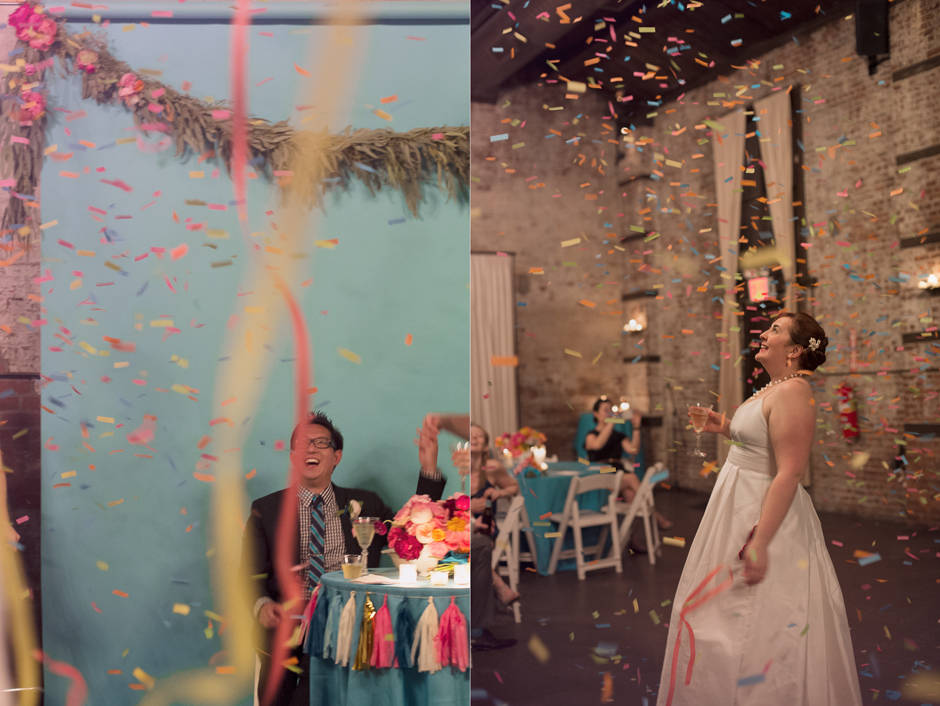